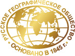
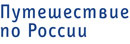
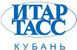
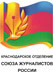

Первая премия
в области национальной географии, экологии, сохранения и популяризации природного и историко-культурного наследия России
16 ноября 2012 г. в Краснодаре был дан официальный старт Премии «Хрустальный компас».
Премия будет вручаться впервые. За «Хрустальный компас» смогут побороться отечественные и зарубежные общественные организации, научные и образовательные учреждения, предприятия различных сфер, а также независимые инициативные группы и общественные деятели. Организатором Премии является Краснодарское отделение Всероссийской общественной организации «Русское географическое общество» при партнерстве корпоративной ассоциации «Газпром на Кубани».
Главная цель Премии найти и поддержать тех, кто искренне считает Россию своим домом, уважает и бережет среду, в которой обитает.
Проекты, которые будут участвовать в Премии – это проекты, которые помогают не только сохранить, но и воссоздать комфортную среду обитания российского человека, природу, культуру страны, собрать уникальный генокод России. В жюри премии вошли известные ученые, общественные деятели России и Кубани: Артур Чилингаров, Николай Дроздов, Владимир Котляков, Анастасия Чернобровина, Сергей Дудко и другие.
Награждение победителей пройдет в начале 2013 года.
Номинации
- 1 Лучший социально- информационный проект по сохранению природы и природного наследия
- 2 Лучший экологический проект промышленных предприятий, бизнеса
- 3 Научное достижение
- 4 Просвещение
- 5 Путешествие и экспедиция
- 6 Лучшее освещение в СМИ
- 7 Издание
- 8 Фоторабота
- 9 Гражданская позиция
- 10 Лучший региональный проект
Как подать проект
Для регистрации участия в конкурсе необходимо заполнить регистрационную форму. После заполнения Заявки потенциальный участник получает подтверждение от Оргкомитета Премии по электронной почте (почтовому адресу) в срок не позднее 7 дней с момента заполнения заявки. После подтверждения регистрации со стороны Оргкомитета Участник высылает материалы проекта согласно Технических требований по адресу: 350007, г. Краснодар, ул. Захарова, 11, каб. 7/8.
Заявка на соискание Премии «Хрустальный компас»
Контакты организационного комитета
- e-mail:
- premiya.compass@rgo.ru; premiya.compass@mail.ru
- адрес:
- 350007, г. Краснодар, ул. Захарова, 11, каб. 7/8.
- тел.:
- +7 (800) 700-18-45; +7 (861) 213-15-66.
Партнеры
-
Организаторы премии
- 

-
Огранизационный партнер
Коммуникационное агентство «АГТ-ЮГ», входящее в AGT Communications Group
-
Информационные партнеры премии
- 
- 
- 